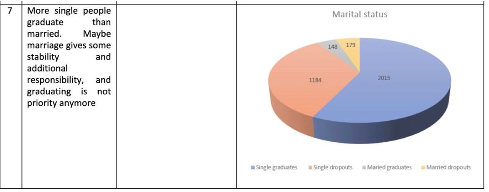
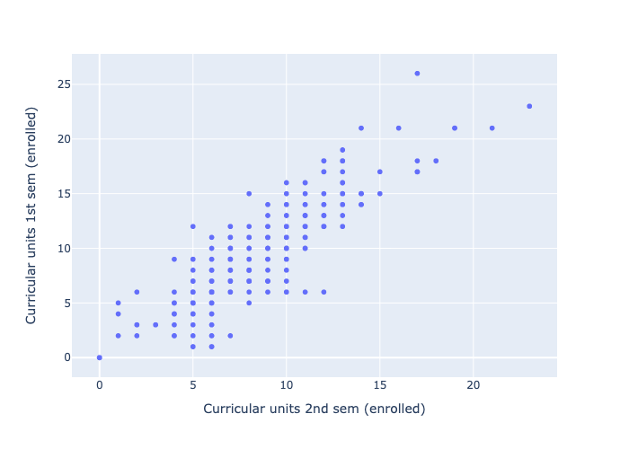
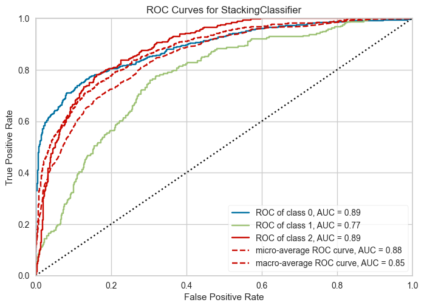

| Mari. stat. | Appl. mode. | Appl. orde. | Cour. | Dayt. atte. | |
|---|---|---|---|---|---|
| count | 4424 | 4424 | 4424 | 4424 | 4424 |
| mean | 1.18 | 18.67 | 1.73 | 8856.64 | 0.89 |
| std | 0.61 | 17.48 | 1.31 | 2063.57 | 0.31 |
| min | 1 | 1 | 0 | 33 | 0 |
| 25% | 1 | 1 | 1 | 9085 | 1 |
| 50% | 1 | 17 | 1 | 9238 | 1 |
| 75% | 1 | 39 | 2 | 9556 | 1 |
| max | 6 | 57 | 9 | 9991 | 1 |
Student dropout analysis based on previously acquired educational achievements: A case of the University of Portalegre
Business Analytics course, Business Informatics Ms programme, Fall 2023.
Abstract
In the world of education, a person’s academical path is often depicted as a linear progression, where students follow a predefined journey from kindergarten to graduation. However, the reality is far more complex. There could be various reasons that emerge during the study program that led students to deviate from this path. These students might encounter different challenges, circumstances, or a lack of proper resources that have led them to drop out of university. In this dataset provided to us, we will delve deeper into understanding the reasons why students have dropped out of the university. We will leverage our social knowledge to comprehend the factors that influenced their decision to drop out and work to prevent such occurrences if the issues are within the university’s purview. Our goal is to propose solutions and their support so that high schools could facilitate and secure students’ educational journeys. We construct the best basic model that predicts the results with 73% balanced precision recall. We provide the recommedatons based on findings and define auxiliary requisite data to further our research in the future.
Goals and Objectives
In order to shed light on the factors for dropout and the dropout itself, we have set the following objectives in this research:
- Basing on literature sources, briefly recap incentives towards studying and its termination
- Formulate Metrics and Key Performance Indicators (KPIs)
- Define measurable KPIs for effective tracking and pinpointing the dropout related trends
- Establish benchmark for success and areas that requires attention for improvement
- Perform Analysis and Pattern Recognition
- Identify key factors that contribute to the dropout rate of students
- Using these factors, propose and build a model predicting students’ dropout from the university, graduation, or further enrollment.
- Evaluate the model built
- Designing Targeted Interventions
- Based on patterns identified, propose targeted interventions
- Brainstorm and implement various strategies to address dropout factors
Introduction
Starting from preliminary school we are told that having an education is very important for your future or that without higher education your job possibilities are going to be very limited. While primary education is mandatory, having higher education is not. There are, however, many reasons for which people may want to pursue higher education. According to studies, many factors are materialistic, the most important factor for pursuing higher education is job acquisition (Knutsen 2011). Some other factors may include increased income in the existing job, improved work conditions or increased ability for retirement. Of course, other, more intrisic factors include seeking for additional knowledge or self-fulfillment (Cortes et al. 2023). There are also factors like meeting new friends, improving social interaction skills or just wanting to make a difference in the world. Of course factors that cannot be ignored are social pressure (Temple 2009), meaning that having friends that want to pursue higher education can influence ones own decision or influence of family members. However, there are people that discontinue their studies prematurely and we are interested to learn what the reasons for such a decision could be. Based on the study and datasets that we used for our research there are multiple factors that influence dropping out.
Nevertheless, pursuing higher education and actually getting the degree has some tangible benefits. According to an OECD – Education at a Glance 2019 research paper (OECD 2019).
“On average across OECD countries, adults with a short-cycle tertiary degree earn 20% more than adults with upper secondary education. The earnings advantage increases to 44% for those with a bachelor’s degree and to 91% for those with a master’s or doctoral degree.”
With this in mind, it is important for government and educational institutions to ensure high level of graduates in society to ensure economic growth and overall increase in well-being. To measure the success of this goal, it is important to set KPI’s, track them and make educated conclusions on what needs to be done or is being done right to reach the goal of higher educated society.
Target Metrics and KPI
In this particular case, KPI’s will be chosen based on datasets of Portugese High Schools but most likely data can be generalised, atleast for Europe, as the region and sociodemographics are not so different. Even though there are many factors that influence the success of graduation, only factors that can be proven by government and educational institutions will be chosen. In order to thwart embezzlement, indicators should be restricted in magnitude and difficult to falsify or manipulate. After rigorous analysis, we propose the following KPIs.
- Student grade improvement compared to support. Based on the dataset, students who had support had 3x lower dropout rates than students that didn’t have. While it is not practical to allocate higher amount of money for studying that itself does not generate value, it scoops that it at least a sizeable parts of the dropout students could be held from leaving with a relatively small aid that would make the benefits of studies outweigh those of working/etc. Leaving is commonly associated with very poor grades (otherwise, even a morally disinterested student would opt to formally remain in the university until they are asked to leave due to poor performance). Since a person with infinitesimal grades is a clear candidate for dropping out, one should identify those students with abrupt downward grade dynamics and quench this. In the proposed KPI, the (grade)_{i} is the mean relative grade change for student j over all their courses at university i at moment t, and the assistance is the mean aid per student (can be 0). If there are no students on their way down , the KPI is guaranteed to be positive.
KPI_{1, i,t} = \frac{|\Delta(\bar{grade})_i|}{ (\bar{assistance}_i)} This does not depend on the number of courses, because the courses are themselves different difficulties, the important thing that the university (the students too) should look after in this regard, that the situation with grades does drastically deteriorate over time.
Institutional Improvements. Although volatile and subjective, as one of the metrics (not KPIs, since it is more difficult to tie this to specific redresses) there could be a longitudinal survey about one’s satisfaction with the studies and programme in general in the fashion of a job an exit or quasi-exit interview (when a person does not leave actually, but they are still invited to answer the questions as if they would be leaving). This would allow to track the scale of dropouts due to frustration with the programme (not engaging enough).
Relative changes in student’s grades. Datasets tell us that the higher the average grade, the lower the dropout rate. Usually students that have low grades are uninterested in the subjects which could be due to having chosen not the right program for them or that the way lectures and information is presented is uninteresting or outdated. Either way this can be improved. Increasing the possibility that the student has chosen the right program for him can be done by introducing more “open days” in higher education institutions and having more upfront information about what can be expected from programs. The overall lecture performance can be improved by taking more time to have up-to-date information presented and teachers having decent motivation of teaching students. This can be achieved by increasing teacher salaries and institutions having more control over teachers and information they present to students.
All these metrics are still vulnerable to misrepresentation, but it is inevitable given the freedom the universities enjoy in managing their study programmes. Still, any manipulation of this metrics can only be temporary and thus is also not in the best interest of the university.
Exploratory Data Analysis
Descriptive Statistics
As we have checked, the dataset does not have zero values, so there is nothing to purge inside it. Later on, we get the basic descriptive statistics, shown below in
Tables 1, 2, 3, 4, 5, 6, 7
| Prev. qual. | Prev. qual. (gra. | Naci. | Moth. qual. | Fath. qual. | |
|---|---|---|---|---|---|
| count | 4424 | 4424 | 4424 | 4424 | 4424 |
| mean | 4.58 | 132.61 | 1.87 | 19.56 | 22.28 |
| std | 10.22 | 13.19 | 6.91 | 15.6 | 15.34 |
| min | 1 | 95 | 1 | 1 | 1 |
| 25% | 1 | 125 | 1 | 2 | 3 |
| 50% | 1 | 133.1 | 1 | 19 | 19 |
| 75% | 1 | 140 | 1 | 37 | 37 |
| max | 43 | 190 | 109 | 44 | 44 |
| Moth. occu. | Fath. occu. | Admi. grad. | Disp. | Educ. spec. need. | |
|---|---|---|---|---|---|
| count | 4424 | 4424 | 4424 | 4424 | 4424 |
| mean | 10.96 | 11.03 | 126.98 | 0.55 | 0.01 |
| std | 26.42 | 25.26 | 14.48 | 0.5 | 0.11 |
| min | 0 | 0 | 95 | 0 | 0 |
| 25% | 4 | 4 | 117.9 | 0 | 0 |
| 50% | 5 | 7 | 126.1 | 1 | 0 |
| 75% | 9 | 9 | 134.8 | 1 | 0 |
| max | 194 | 195 | 190 | 1 | 1 |
| count | 4424 | 4424 | 4424 | 4424 | 4424 |
| mean | 0.11 | 0.88 | 0.35 | 0.25 | 23.27 |
| std | 0.32 | 0.32 | 0.48 | 0.43 | 7.59 |
| min | 0 | 0 | 0 | 0 | 17 |
| 25% | 0 | 1 | 0 | 0 | 19 |
| 50% | 0 | 1 | 0 | 0 | 20 |
| 75% | 0 | 1 | 1 | 0 | 25 |
| max | 1 | 1 | 1 | 1 | 70 |
| count | 4424 | 4424 | 4424 | 4424 |
| mean | 0.02 | 0.71 | 6.27 | 8.3 |
| std | 0.16 | 2.36 | 2.48 | 4.18 |
| min | 0 | 0 | 0 | 0 |
| 25% | 0 | 0 | 5 | 6 |
| 50% | 0 | 0 | 6 | 8 |
| 75% | 0 | 0 | 7 | 10 |
| max | 1 | 20 | 26 | 45 |
| count | 4424 | 4424 | 4424 | 4424 |
| mean | 4.71 | 10.64 | 0.14 | 0.54 |
| std | 3.09 | 4.84 | 0.69 | 1.92 |
| min | 0 | 0 | 0 | 0 |
| 25% | 3 | 11 | 0 | 0 |
| 50% | 5 | 12.29 | 0 | 0 |
| 75% | 6 | 13.4 | 0 | 0 |
| max | 26 | 18.88 | 12 | 19 |
| count | 4424 | 4424 | 4424 | 4424 |
| mean | 6.23 | 8.06 | 4.44 | 10.23 |
| std | 2.2 | 3.95 | 3.01 | 5.21 |
| min | 0 | 0 | 0 | 0 |
| 25% | 5 | 6 | 2 | 10.75 |
| 50% | 6 | 8 | 5 | 12.2 |
| 75% | 7 | 10 | 6 | 13.33 |
| max | 23 | 33 | 20 | 18.57 |
The students are from multiple countries, but the overwhelming majority of the students are from Portugal. It would be interesting to see how the students’ admission grade depends on their previous qualification in their home countries, but the samples are scarce. Many students from abroad are from the Overseas Territories where it’s more challenging to get comparable education. However, they and inland Portugal students were naturally given some exemptions, as the dataset states 4. 5
For example, the students admitted per Ordance no. 854 6 were not required to demonstrate the proof of their fitness for studying since their received a diploma in secondary education administered in Portuguese (Angola, East Timor, Mozambique, Guinea Equatorial). Students admitted per Ordnance no. 533 7 were from another university in Portugal with overlapping courses covered recently enough so they were not required to repeat them. Finally, those admitted per Ordnance no. 612 8 came from other countries but had comparable material in their studies and so their points were recalculated with some amortization.
Data Visualizations

Due to class imbalance , the variability for the Portuguese students is much higher, and while the 3 categories (see Figure 1) with highest grades are natural, i. e. doctors, masters as higher education, the 3rd is unintuitive (the 10 classes) and we tend to explain it as self-selection and high correlation with other indicators (those entering the university in the 10th grade are more motivated then dwelling in schools in 11th and 12th grades).
Also, there is a drastic imbalance over yet another crucial factor: age. Students of age are far less ubiquitous, can have far more incentives to abandon studies and smaller potential for apprehension of material. Indeed, this is clearly shown on the next graph 2
Q. v. the sizes of the bins for dropout students differ far less than the total size for the name of the student.
If the hypothesis about some external factors is correct , the target variable should be much dependent on previous grades,
The datapoint cloud on Table 3, however, shows that this rule has a lot of exceptions.
We can draw the following observations:
The distribution of admission grades is roughly normal with most students scoring between 120 and 160 marks.
The distribution of previous qualifications (grades) is also the same with most of them having grades in between 120 and 160.
There is seen a positive correlation between admission grade and previous qualification grade indicating students with higher previous qualifications tend to have higher admission grades.
The visualizations above, however, were natural for the few quantitative columns, which show the natural interconnection between the curricularly accrued units in the 1st and in the 2nd year, which are in turn mostly unrelated to the admission grade. This is understandable since the grades are commonly based on the successfulness of the local program and student’s toil, while the students’ backgrounds are commonly different and this puts them into inequitable positions when passing the admission exams.
In these previous graphs, we considered quantitative columns that are more or less exogenous to the dataset (e. g. age and the previous qualification grade are not influenced by the current grade of the students).
However, the majority of columns of this dataset are qualitative and they are at least partially endogenous as stem from the decisions during the study and their consequences. For this, we need to propose a mechanism of influence, then formulate and test a hypothesis via an analysis of discriminate groups.

We see on Figure 4 that having debt is always a serious impediment against studies because it gives wrong incentives towards directly making money in the short run instead of focusing solely on one’s studies that could aid to make altogether greater money in the long run.

We also consider the impact of scholarships and other compensations in academic support, which should alleviate the complications associated with adaptations in new environment.

In different studies, it is quite common to compare the academic success of a student with the academic successes of their parents as this has both direct and indirect effects , s. a. i. e. both are connected to welfare, but also it can be that there is another channel of knowledge transmission to the younger generation.
Observations : * The bar chart shows that mother’s occupation is quite influential. This influence is greater the pa’s due to traditional effect, and we distinctly see that students whose mothers are ‘white collars’ dropout significantly more rarely than those whose mothers are more engaged in physical labor.
- This also may suggest the mother’s occupation can influence student retention, emphasizing the need for financial support and family engagement.
Data correlation table (quantitative columns only)
As visible on Figure 7, there are strong positive correlation among the curricular units for 1st and 2nd sem that could suggest that students that are doing well in the first sem will certainly do well in the upcoming semester. This could suggest that students with lower curricular units have a higher chance of dropping out due to their academic preparedness and failing to meet the requirements and expectations of the study program.
In the remaining part, we examine the correlations of purely endogenous temporal variables. This does not give a scoop about the source of causation and is not a good predictor, but exhibits an analysis of autocorrelation inside the quasi-temporal data.
We can see that the points for the 1st semester and 2nd semester are correlated which shows that are one’s marks are primary drivers of success and exhibit sizeable correlations


Unmentioned data issues
While the dataset does not have empty columns , there is some auxiliary data that could be very appropriate to have together with it. For example, we have data for years that are many in today’s changing education environment, but there is no open data as proxy for the conditions in which the students have to study and which influence their dropout ratios (causing affection or not). Apart from data on schorlarships, any transitions and their effect (even though hapenned during reforms in Portugal education field in 2000s-10s) are downplayed. Another significant challenge are extraneous events that fundamentally influence the life of student, such as permanent homecare of one of the relatives, or a new job, or transfer to another university which is more preferable. In each of three and arguably more cases, no known factors can stop a person from leaving, and any model on this dataset would fail. From the societal point of view, these leaves should not be pejorized as dropouts, since this makes students more felicitous. Since employment and civil status could be retrieved from Social Services, it would be nice if we checked our model against ‘undesirable’ leaves only.
Data Mining (Analysis)
ML pipeline design
Now, we need to define our data mining strategy.
In the matrix 7 for correlations, we already see high correlations between many values. Hence, if we (certainly we should) also consider categorical variables in our data mining analysis, we must reduce the number of variables because the true dimensionality of the initial space is too high and virtually all ways of embedding and distance calculation are too costly and prohibitive given a relatively small amount of datapoints in this dataset.
In EDA Section 4, we already stressed the issue of class imbalance. To at least partially recompense for this, we need to perform SMOTE augmentation of scarcer classes. After dataset is SMOTE-amplified, our common step would be to dispose of multicollinear columns.
High dimensionality prevents intuitive DBSCAN threshold setting and some inferior algorithms as TSNE. Hence, although not considering distal non-linear data structures, we reduce the dimensionality via principal component analysis. After we perform the PCA, we perform Yeo-Johnson power transform to make dedimensionalized data look more like multivariate normal distribution (although some features like schooling points already have near-normal distribution, joint distribution normality for a vector linear combinations is not guaranteed without pretransforming). After the distribution of the data has become closer to Normal Multivariate, it is now possible to apply the outlier detection method. Since the linear PCA transform has alienated initial neighbours and thwisted the distances, it is not correct to apply distance-based outlier detection methods such as outlier kNN, LOF, and others. Instead, we would apply such method as Isolation Forest, because its criterion is invariant by linear transformation, and now, given the unimodality of the distribution, it is straghtforward to locate the outliers based on their secludibility.
Then several estimators from various standard families are independently trained and va fine-tuned, by mean F1 measure, the model that is most precise in predicting the outcome is rendered. We confer some other renowned metrics for the best model . In total, we consider 3 different types of models for classification (logical, linear separative, linear generative), implying algorithms of various ‘difficulty’ levels, including 3 boostings: LGBoosting, XGBoosting (gbc), Catboost, Random Forest, a Decision Tree as well as linear discriminate analysis and logistic regression. We test models against each other and against dummy classifier. The results of the best models are given in leaderboard below .
Data mining application
| Initiated | . . . . . . . . . . . . . . . . . . | 13:48:33 |
| Status | . . . . . . . . . . . . . . . . . . | Selecting Estimator |
| Estimator | . . . . . . . . . . . . . . . . . . | Logistic Regression |
| Model | Accuracy | AUC | Recall | Prec. | F1 | Kappa | MCC | TT (Sec) | |
|---|---|---|---|---|---|---|---|---|---|
| catboost | CatBoost Classifier | 0.7035 | 0.8558 | 0.7035 | 0.7213 | 0.7097 | 0.5235 | 0.5256 | 1.6310 |
| gbc | Gradient Boosting Classifier | 0.6964 | 0.8609 | 0.6964 | 0.7332 | 0.7086 | 0.5197 | 0.5249 | 0.7690 |
| rf | Random Forest Classifier | 0.7019 | 0.8570 | 0.7019 | 0.7214 | 0.7084 | 0.5207 | 0.5230 | 0.2150 |
| ridge | Ridge Classifier | 0.6977 | 0.0000 | 0.6977 | 0.7214 | 0.7048 | 0.5136 | 0.5170 | 0.0890 |
| lightgbm | Light Gradient Boosting Machine | 0.6987 | 0.8533 | 0.6987 | 0.7155 | 0.7045 | 0.5152 | 0.5172 | 0.7850 |
| lda | Linear Discriminant Analysis | 0.6890 | 0.8473 | 0.6890 | 0.7397 | 0.7037 | 0.5107 | 0.5191 | 0.0780 |
| dt | Decision Tree Classifier | 0.6124 | 0.7074 | 0.6124 | 0.6386 | 0.6226 | 0.3879 | 0.3904 | 0.0910 |
| lr | Logistic Regression | 0.3621 | 0.5124 | 0.3621 | 0.2756 | 0.3035 | 0.0460 | 0.0541 | 0.7850 |
| dummy | Dummy Classifier | 0.3211 | 0.5000 | 0.3211 | 0.1031 | 0.1561 | 0.0000 | 0.0000 | 0.0840 |
Results of fitting estimators of different families
Thus, the best model by F1 measure is CatBoostClassifier, which is renowned for scoring fairly well on low magnitude tabular data, while ordinary GBTC is the most second to prime and the most robust one, featuring best conventional recall, accuracy, and AUC metrics. The Figure 11 figure shows the ROC AUC plot for the model

Our CatBoost parameters were already opinionated, with good rule of thumbs, however, it is essential that we ensure that we retrieve everything from this model, and so we performed a tuning of the best model with Tree Parzen Estimator (TPE) tuner. This did not, however, yield a robustly better model within a sensible number of iterations (the results are available upon request). Next, we return to the models that were not much worse than our top model in the leaderboard. Random Forest that scored well is known to make low variance and GBTC classifier makes lower bias, so it can be benefitial to combine them. We consider 2 meta-model settings: the simple averager and the Logistic Regression. In our experiments, Logistic Regression did not bring any sizeable improvement (See Figure 13) but the averager improved average F1 by 0.03 points (See Figure 12).
On Figure 12 there is the figure that exhibits the ROC curve for the blender model.
Below, there is the stacker model ROCAUC to improve the F1 measure. It plays a little better than without any supermodel, but this is not as high as with simple blending

Currently, we have a prediction model, but its decisions are not transparent enough, because it is a stacked boosting of sequences of conditions on sophisticated linear combinations of several dozens of source variables. To add explainability, we decide to compute the input of each source variable via the following procedure. First, we examine the behaviour of the model on production data with and without several features, and thus compute the Shapley values for the model by its components, presented on Figure 14. Then, we infer the coefficients for variable decomposition for the components (See Figure 15 for exemplary distribution of weights of the 3rd component) and thus multiplying the weights by modulo of interstitial power function transform we can ultimately obtain a breakdown for variables for the decision of our best model for each particular case.
However, while all top models in leaderboard and in the stacking models demonstrate significant improvement over a dummy classifier and other simplistic models such as Logistic Regression, the scores still a lot to be desired, which indicates that reduction of dimensionality, which is inevitable under given class imbalance, has come at a price of variance loss, or, alternatively, all the covariates do not explain sufficiently well the outcome of studies: in academic success, as in life, a lot depends on the proper characteristics of a person which are difficult to elicit and much is undetermined. Partially, such a moderate result can be exaplained by the multiclass nature of the test: the ROCAUC plot on Figure 11 shows, AUC is worse on class 1, i. e. “Enrolled”. These enrolled people have include both pending dropouters and diligent scholars, and the core feature of the model is that it can tell two other classes apart better, with ROCAUC 0.9. Thus, this model can generally be used as an indicator of a soon dropout of a student which the universities can be wary of, undertaking the corrective action or allocating the stipends.
Results
With this analysis, we have some valuable insights about some crucial factors like academic support, socioeconomic factors, age, previous qualifications, and others that play a significant role in student retention. We have built a model on all available data to predict the dropout rate of students, that is quite lightweight, production-ready and thus can easily be incorporated into some advisory system.
The observed patterns imply a lot to stress and decide in the lives of students and their associates. First, we strive to insentivize parents to improve their labour efficiency and pursue greater carreer so that ultimately they could dedicate more time to their children’s education, and proactively stir their self-propelled interest. Additionally, we could provide financial assistance to those who are struggling to pay with if this is contemporaneous with a significant degradation in their university marks, as this subrogates the stimuli for a person in an age where they are most perceptive to knowledge and is a good predictor of a dropout. Also importantly, we could teach the students, especially going on their second studies, that it is quite unlikely that they are going to get high grades or exit the university without proper time management and confirmation that they assign top priority to their studies. They are also advised to make that clear to all their relatives and stakeholders who might underestimate the effects of such a change. Although this could result in a reduction of enthusiastic entrants, this would increase at least the KPI of retention and arguably also increase the KPI on number of diplomas issued, because with fewer but more motivated students the university would have more time to dedicate to most obstinate pending alumni.
Addressing these factors carefully can effectively lead to dropout rates reduction and improve overall student outcomes
References
Cortes, Sylvester, Alma Agero, Elena Maria Agravante, Janelyn Arado, Cynthia Anne Arbilon, Eddalin Lampawog, Arlene Fe Letrondo, et al. 2023. “Factors Influencing Students’ Intention to Enroll in Bachelor of Science in Biology: A Structural Equation Modelling Approach.” Cogent Education 10 (2): 2273635. https://doi.org/10.1080/2331186X.2023.2273635.
Knutsen, David. 2011. “Motivation to Pursue Higher Education.” Ed.D. Dissertations, May. https://digitalcommons.olivet.edu/edd_diss/26.
OECD. 2019. Education at a Glance 2019: OECD Indicators. Education at a Glance. OECD. https://doi.org/10.1787/f8d7880d-en.
Temple, Shawn. 2009. “Factors That Influence Students’ Desires to Attend Higher Education.” Seton Hall University Dissertations and Theses (ETDs), January. https://scholarship.shu.edu/dissertations/420.
Footnotes
(all) Rīga Technical University↩︎
(all) Rīga Technical University↩︎
(all) Rīga Technical University↩︎
Link to the dataset description: https://archive.ics.uci.edu/dataset/697/predict+students+dropout+and+academic+success↩︎
Notably, the authors did not specify all categories of students even in the description to the dataset, so it can be regarded as one of ‘issues’ of the dataset that it can be challenging to fully interpret the feature store.↩︎
Link to the source document: https://dre.tretas.org/dre/106607/portaria-854-B-99-de-4-de-outubro↩︎
Link to the source document: https://dre.tretas.org/dre/104726/portaria-533-A-99-de-22-de-julho↩︎
Link to the source document: https://dre.tretas.org/dre/51542/portaria-612-93-de-29-de-junho↩︎